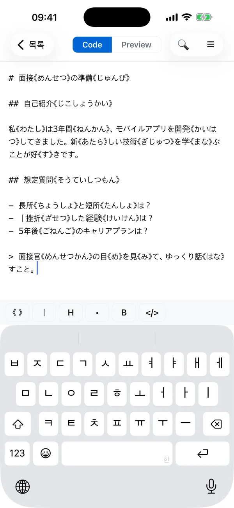
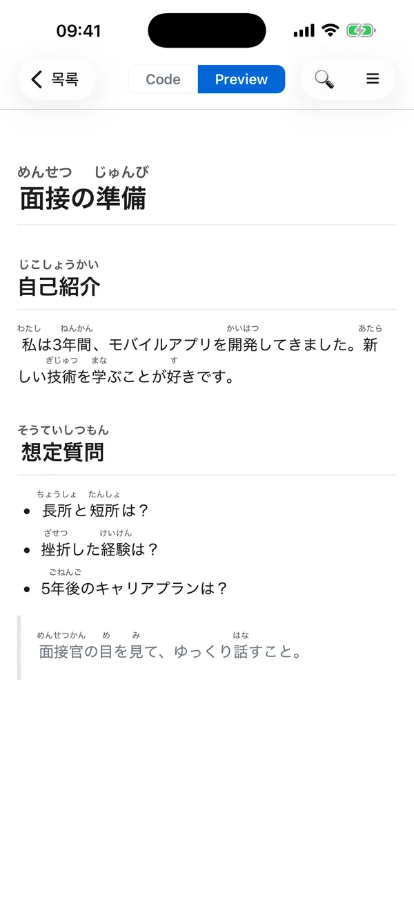
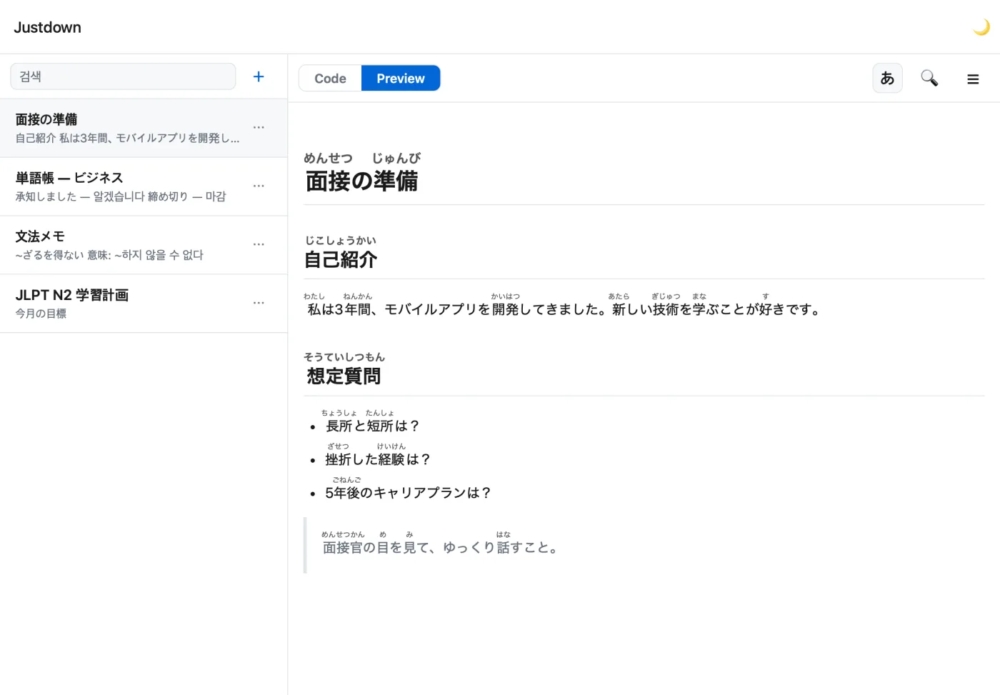
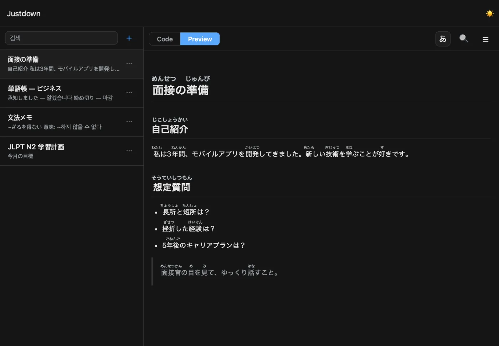

Notes that show
how to read every 漢字.
Justdown is a note app for people learning Japanese. Write a kanji word and its reading once, and the reading appears in small letters above the kanji — just like the furigana in Japanese children's books and manga.
Free. No sign-up. No ads. For iPhone and iPad.


See it
in action.
Why I built it, and what it looks like in use — in a short video.
Write the reading in 《 》.
It shows up above the kanji.
Right after a kanji word, type its reading inside 《 》 brackets. Switch to Preview and the reading moves above the kanji. Try the Code and Preview tabs in the example.
Want to test yourself? Tap あ to hide the readings. Tap it again to bring them back.
# 面接《めんせつ》の準備《じゅんび》
## 自己紹介《じこしょうかい》
私《わたし》は3年間《ねんかん》、モバイルアプリを開発《かいはつ》してきました。
## 想定質問《そうていしつもん》
- 長所《ちょうしょ》と短所《たんしょ》は？
- 挫折《ざせつ》した経験《けいけん》は？
面接の準備
自己紹介
私は3年間、モバイルアプリを開発してきました。
想定質問
- 長所と短所は？
- 挫折した経験は？
Simple notes,
built for reading Japanese.
Readings above the kanji
Write 漢字《かんじ》 and it shows as 漢字 with かんじ in small letters on top. No special keyboard or settings needed.
Hide readings to quiz yourself
Tap あ to hide every reading in a note and check whether you can still read it. Each note remembers whether its readings are shown or hidden.
Shortcut buttons above the keyboard
《 》 are hard to find on most keyboards. A button above the keyboard types them for you.
Headings, lists and tables
Start a line with # for a heading or - for a list (this style is called markdown). Long notes get a table of contents made from their headings.
Search
Find a word across all your notes, or inside the note you're reading.
Light and dark
A dark theme that's easier on the eyes for late-night study. Switch any time from the note list.


Almost nothing
to memorize.
The writing style comes from Aozora Bunko, a free online library of Japanese books. It's all plain text, so your notes still make sense when you paste them into other apps.
The basic rule: put the reading in 《 》 right after the kanji. The reading covers all the kanji directly before it. To put it on only some of them — like just 学校 in 日本語学校 — add ｜ where the reading should start.
For developers: the part that converts 《 》 is open source as markdown-it-aozora-ruby.
| If you type | You'll see |
|---|---|
漢字《かんじ》 | 漢字 |
日本語｜学校《がっこう》 | 日本語学校 |
見《み》る | 見る |
<ruby>日本<rt>にほん</rt></ruby> | 日本 |
Your notes stay
on your device.
Justdown never connects to the internet. There's no sign-up, and nobody — not even the developer — can see what you write.
- 0
Accounts
No sign-up. Open the app and start writing.
- 0
Trackers
No usage tracking or data collection.
- 0
Ads
Free, with no ads and no in-app purchases.
- 100%
On device
Notes are saved only on your iPhone or iPad.
Questions
What is furigana?
Small hiragana written above or beside a kanji to show how it's read — for example, かんじ above 漢字. Japanese children's books, manga and textbooks use it all the time.
Do I need to know markdown?
No. You can just write plain sentences. Markdown is a few optional symbols — # at the start of a line makes a heading, - makes a list item — and Preview shows how it looks.
Does it add furigana automatically?
No. You type the reading yourself inside 《 》. Typing it helps you remember it, and it lets the app work completely offline.
Can I sync between iPhone and iPad?
Not yet. For now, each device keeps its own notes. Syncing through iCloud is the next planned feature.
Is there an Android version?
Not yet. Justdown is for iPhone and iPad only for now.
Can I move my notes to another app?
Yes. Copy the text from the Code tab and paste it into any app. Notes are saved only on your device, so copy anything important before you delete the app.
Justdown
Free on the App Store.